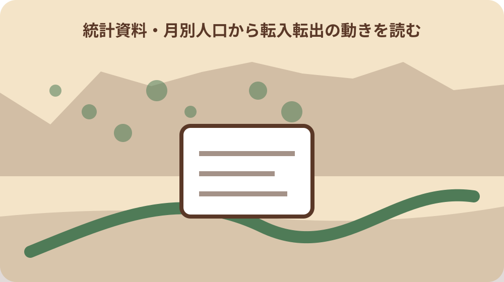
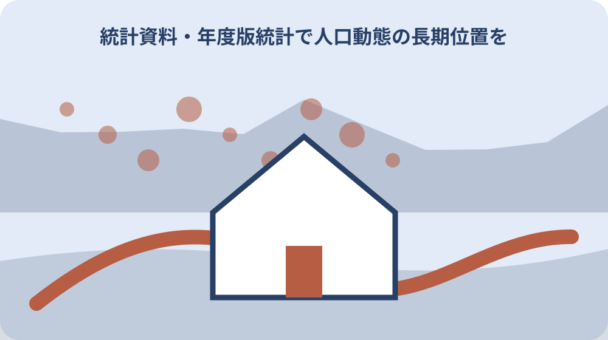

先に結論を確認する
月別人口表の増減を世帯記録と照合したい人は、対象、予定日、現在分かっている事実を先に一枚へまとめます。その後に森町公式の「森町公式：統計資料の主確認資料」を開き、対象条件と窓口を照合してください。
森町の月別人口から転入転出の動きを読むでは、最初に何を確認しますか？最初に対象となる人・場所・予定日を一枚に書き、対象地、目的、時期、確認資料をそろえます。そのうえで「森町公式：統計資料の主確認資料」の対象条件と担当窓口を確認します。
森町の月別人口から転入転出の動きを読むの期限や行動時期はどう考えますか？期限は制度や予定日によって異なります。公式ページの対象年度と受付期間を確認し、実行日から資料取得と問い合わせの日を逆算してください。
この問いで最初に決めること
扱う範囲は「月別人口表の増減を世帯記録と照合したい」という具体的な迷いです。対象者、場所、予定日を決める前に、別の制度や別年度の情報を混ぜていないか確認します。
確認表の最初の欄には「月別人口表の増減を世帯記録と照合したい」を書きます。分からない場合は空欄にせず、誰へ、いつ確認するかを添えます。
結論を先に決めると、都合のよい資料だけを集めやすくなります。実行する案、条件が整えば実行する案、今回は見送る案の三つを残してください。
このページは個別の許可、税額、医療判断、権利関係を確定するものではありません。読者自身の条件を整理し、担当機関へ正確に相談するために使います。
「この問いで最初に決めること」の段階では「資料Bの読み方」を独立した確認項目にします。根拠資料と確認日を添え、分からない部分には確認先と予定日を書いてください。
「この問いで最初に決めること」を家族へ共有するときは「第三資料との照合」の結論だけを送らず、確認済みの範囲、残った疑問、次に動く人を一緒に伝えます。
一次情報から確定できる範囲
「この確認」の確認対象は、統計名称と基準日を別項目として記録する実務であり、一方から他方を推定しない。
この確認では、集計単位を資料の更新日と混同せず、対象となる日付・年度として転記する。
「森町公式：統計資料の主確認資料」は公式の一次情報です。この記事では「森町公式・主資料」という役割で参照します。資料名、対象年度、担当部署、確認日を残し、別資料の説明と混ぜないでください。
「森町公式：月別人口から転入転出の動きを読むの補完確認資料」は公式の一次情報です。この記事では「森町公式・補完資料」という役割で参照します。資料名、対象年度、担当部署、確認日を残し、別資料の説明と混ぜないでください。
「一次情報から確定できる範囲」を家族へ共有するときは「第三資料との照合」の結論だけを送らず、確認済みの範囲、残った疑問、次に動く人を一緒に伝えます。
「一次情報から確定できる範囲」について窓口へ相談する前に「の生活への影響」を一文で説明できる形にします。対象となる人や場所、希望時期を添えると担当範囲を確認しやすくなります。
森町で条件が変わるポイント
森町は中心市街地、天浜線沿線、平地の集落、天方・三倉の山間部で、距離と移動の感じ方が異なります。町全体の説明が正しくても、対象地点の道路、標高差、通信、周辺施設まで同じとは限りません。
住所が分かる場合は地図上の一点だけでなく、入口、接道、最寄りの公共施設、避難経路、帰路を一緒に見ます。住所が未確定なら地区名と目的地を分け、同名施設や旧地名との取り違えを防ぎます。
曜日と時間帯も条件です。窓口、交通、行事、医療、買物、農作業は平日と休日、朝と夕方で利用状況が変わります。一度の訪問や一枚の写真を、年間を通じた状態として一般化しません。
山、川、農地、社寺、住宅地では、公開情報だけで見えない管理の都合があります。私有地や作業場所へ入らず、地域の生活と安全を妨げない範囲で確認することを、情報収集の前提にします。
「森町で条件が変わるポイント」について窓口へ相談する前に「の生活への影響」を一文で説明できる形にします。対象となる人や場所、希望時期を添えると担当範囲を確認しやすくなります。
「森町で条件が変わるポイント」を見直す日は「地区差の確認」の実行予定と公式情報の更新時期から決めます。変更がなければその事実も記録し、古い版との混同を防ぎます。

資料を集める順番
資料は、本人・対象を特定するもの、現在の状態を示すもの、期限を示すもの、権利や利用条件を示すものに分けます。全部を一つの封筒へ入れるより、何を証明する資料か付箋を付ける方が不足を見つけやすくなります。
対象地、目的、時期、確認資料を一覧にし、原本が必要か、写しでよいか、発行からの期限があるかを確認します。まだ取得しない資料も「取得先」「必要になる場面」「費用」を書いておくと、家族が代わって動くときに迷いません。
オンラインで取得した資料はファイル名へ日付と資料名を入れます。紙の資料は該当箇所へ印を付けます。個人番号、医療情報、登記識別情報などを家族共有の一般フォルダへ無防備に置かないでください。
不足資料があるときは、推定値で話を進めず、どの判断までなら保留のまま進められるかを確認します。この確認の目的は書類を集めきることではなく、次の安全な判断に必要な根拠をそろえることです。
「資料を集める順番」を見直す日は「地区差の確認」の実行予定と公式情報の更新時期から決めます。変更がなければその事実も記録し、古い版との混同を防ぎます。
「資料を集める順番」の段階では「家族に残す記録」を独立した確認項目にします。根拠資料と確認日を添え、分からない部分には確認先と予定日を書いてください。
現地または窓口で確認すること
窓口や当事者へ問い合わせるときは、月別人口表の増減を世帯記録と照合したいとだけ伝えるのではなく、対象地点、希望時期、すでに見た資料、今日知りたい範囲を伝えます。担当外なら次の窓口名と、引継ぎに必要な説明を聞きます。
現地では安全、利用条件、周辺動線の三点を優先します。写真には確認日と撮影方向を残し、人物、表札、車両番号、生活状況など個人を特定できる情報を公開しないようにします。
看板や掲示がウェブ案内と違う場合は、その場で都合よく解釈しません。掲示の対象期間と管理者を確認し、必要なら双方の資料名を示して問い合わせます。現地情報も確認日の記録がなければ再利用できません。
危険、医療、税、法務、構造、安全性など資格や所管判断が必要な事項は、このページで結論を出しません。事実関係を整理し、専門家や担当機関へ相談するための準備として使います。
「現地または窓口で確認すること」の段階では「家族に残す記録」を独立した確認項目にします。根拠資料と確認日を添え、分からない部分には確認先と予定日を書いてください。
「現地または窓口で確認すること」を家族へ共有するときは「大石の視点」の結論だけを送らず、確認済みの範囲、残った疑問、次に動く人を一緒に伝えます。
期限と実行日の組み立て方
期限は、申請・予約の締切、資料の有効期間、実施日、支払日、見直し日へ分けます。一つの日付だけをカレンダーへ入れると、前提資料が間に合わないため、準備開始日も設定します。
この確認を実行する日から逆算し、二週間前、一週間前、前日、当日に確認する事項を置きます。変動しやすい運行、天候、在庫、受付、行事情報は直前確認へ回し、早い段階で断定しません。
役場、事業者、家族、専門家の返答待ちがある場合は、相手の回答期限ではなく、自分が次の判断をする期限を決めます。返答がなければ保留するのか、別案へ切り替えるのかも先に共有します。
年度をまたぐ情報は特に注意します。前年の対象者、金額、日程、受付方法を翌年へそのまま当てはめず、当年版の資料が出た時点で差分を確認してください。
「期限と実行日の組み立て方」を家族へ共有するときは「大石の視点」の結論だけを送らず、確認済みの範囲、残った疑問、次に動く人を一緒に伝えます。
「期限と実行日の組み立て方」について窓口へ相談する前に「公式情報源」を一文で説明できる形にします。対象となる人や場所、希望時期を添えると担当範囲を確認しやすくなります。
費用と見えにくい負担
費用は窓口で支払う金額だけではありません。交通、郵送、証明取得、専門相談、修繕、管理、休業時間、家族の移動などを別々に書き、分からない項目をゼロ円にしないことが大切です。
見積りが必要な項目は、対象範囲と前提条件をそろえて依頼します。安い・高いという評価より、何を含み何を含まないかを比較します。追加作業が起こる条件も質問してください。
公的な支援や減免が見つかっても、対象要件、申請時期、着手前申請の有無を確認します。利用できる可能性と、今回実際に利用できることを同じ文章にしません。
お金をかけない代案にも時間と管理責任があります。先送り、家族対応、自主管理を選ぶなら、誰がいつまで担当し、できなくなったときにどう切り替えるかを決めます。
「費用と見えにくい負担」について窓口へ相談する前に「公式情報源」を一文で説明できる形にします。対象となる人や場所、希望時期を添えると担当範囲を確認しやすくなります。
「費用と見えにくい負担」を見直す日は「月別人口表の増減を世帯記録と照合したい」を確認済みと判断する条件」の実行予定と公式情報の更新時期から決めます。変更がなければその事実も記録し、古い版との混同を防ぎます。
家族・関係者との共有
家族や共有者がいる場合、情報を集める人と決定できる人は同じとは限りません。連絡役だけが結論を背負わないよう、選択肢、根拠、費用、未確認事項を一枚で共有します。
話合いでは賛成・反対を先に聞かず、事実、希望、困りごと、保留条件の順に整理します。月別人口表の増減を世帯記録と照合したいという目的へ戻り、何が分かれば次へ進めるかを各人から確認します。
遠方の家族には写真だけでなく、住所、地図、資料名、確認日を送ります。写真の印象だけで安全性や管理状態を判断しないよう、撮影していない範囲と未確認事項も添えます。
本人の意思確認が必要なテーマでは、家族の都合で結論を置き換えません。支援が必要な場合も、本人が理解し選べる情報量と順序を整え、必要に応じて公的相談先へつなぎます。
「家族・関係者との共有」を見直す日は「月別人口表の増減を世帯記録と照合したい」を確認済みと判断する条件」の実行予定と公式情報の更新時期から決めます。変更がなければその事実も記録し、古い版との混同を防ぎます。
「家族・関係者との共有」の段階では「月別人口表の増減を世帯記録と照合したい」を独立した確認項目にします。根拠資料と確認日を添え、分からない部分には確認先と予定日を書いてください。
判断を急がないための代案
結論を急がないため、実行する案、条件が整えば実行する案、今回は見送る案の三つを残します。二択にすると、未確認事項が多い段階で無理な判断をしやすくなります。
最小の一歩は、資料一件を確認する、対象地点を地図に記す、担当窓口を確認する、家族一人へ共有する、のいずれかで十分です。大きな契約や申請を最初の行動にしません。
目的そのものを見直すことも代案です。この確認で本当に解決したいのが時間、費用、安全、家族負担のどれかを確認すれば、別の制度や方法が合う場合があります。
保留を選ぶ場合も、再確認日と保留理由を残します。何もしない状態と、根拠を持って待つ状態は違います。更新情報が出たときに再開できる形へ整えてください。
「判断を急がないための代案」の段階では「月別人口表の増減を世帯記録と照合したい」を独立した確認項目にします。根拠資料と確認日を添え、分からない部分には確認先と予定日を書いてください。
「判断を急がないための代案」を家族へ共有するときは「問いの範囲」の結論だけを送らず、確認済みの範囲、残った疑問、次に動く人を一緒に伝えます。

記録を次の人へ残す
記録には、対象、確認日、確認者、資料名、分かったこと、未確認事項、次の担当を残します。結論だけでは、前提が変わったときにどこから見直すか分かりません。
住所と地番、通称と正式名称、年度と暦年など、似ているが役割の違う情報を同じ欄へ入れないでください。元資料の表記を保存し、家族向けの説明を別欄に書きます。
更新した資料は古い版を黙って上書きせず、確認日の違いが分かるようにします。不要になった個人情報は適切に破棄し、共有範囲も定期的に見直します。
次の人が同じ問い合わせを繰り返さずに済む記録が理想です。担当者の個人名を必要以上に共有せず、部署名、公式連絡先、回答の要点と確認日を残します。
「記録を次の人へ残す」を家族へ共有するときは「問いの範囲」の結論だけを送らず、確認済みの範囲、残った疑問、次に動く人を一緒に伝えます。
「記録を次の人へ残す」について窓口へ相談する前に「公式資料の位置付け」を一文で説明できる形にします。対象となる人や場所、希望時期を添えると担当範囲を確認しやすくなります。
大石の視点
私は小さな不動産業者として、この確認のような相談でも、いきなり売却や契約の話へ進めるべきではないと考えます。対象、道路、境界、名義、農地、維持負担など関係する事実を先に分ける方が、家族の選択肢を守れます。
森町では地図上の近さだけでなく、道路幅、坂、川、山、鉄道、地域の管理との関係が判断に影響します。私は現地を見ていない事項を体験談のように語らず、確認が必要な条件として明示します。
まだ決めていない人に必要なのは、結論を迫る言葉より、何が分かれば決められるかを整理する道具です。査定額や制度名だけを先に置かず、家族が引き継げる記録を作ることを勧めます。
良い選択は一つではありません。実行、管理継続、専門相談、時期を待つという案を同じ表で比べ、地域への配慮と所有者・利用者の現実的な負担を同時に見ます。
「大石の視点」について窓口へ相談する前に「公式資料の位置付け」を一文で説明できる形にします。対象となる人や場所、希望時期を添えると担当範囲を確認しやすくなります。
「大石の視点」を見直す日は「資料Aの読み方」の実行予定と公式情報の更新時期から決めます。変更がなければその事実も記録し、古い版との混同を防ぎます。
まとめと次の一歩
この確認の結論は、対象・時点・担当者・根拠を分けることから始め、森町と所管機関の一次情報で現在の条件を確認することです。一般記事は順序を整える道具であり、個別の可否を保証するものではありません。
今日できるのは、対象地、目的、時期、確認資料を書き出し、二つの一次情報の確認日を残すことです。そのうえで、現地・窓口・家族・専門家のうち、次に確認する相手を一人だけ決めます。
実行直前には期限、安全、権利・利用条件、費用、帰路または管理方法を再点検します。どれかが未確認なら、結論を急がず代案へ戻れるようにしてください。
このページを家族へ送る場合は、ページURLだけでなく、自分たちの対象地点、希望時期、保留事項を短く添えます。同じ情報を読んでも前提が違えば判断が変わることを共有して終えます。
「まとめと次の一歩」を見直す日は「資料Aの読み方」の実行予定と公式情報の更新時期から決めます。変更がなければその事実も記録し、古い版との混同を防ぎます。
「まとめと次の一歩」の段階では「資料Bの読み方」を独立した確認項目にします。根拠資料と確認日を添え、分からない部分には確認先と予定日を書いてください。